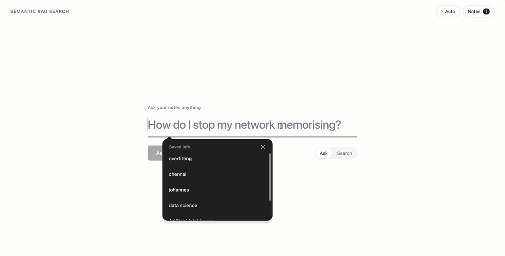

Ask your notes.
Get the answer and where it came from.
A full-stack RAG app: notes are split, embedded and searched by meaning, and the answer cites the passages it used. When the notes do not hold the answer, it says so.
FastAPI · Node.js · React · PostgreSQL · MongoDB · Docker · Kubernetes · AWS
1 → Live, in your browser
Ask the project's own 50,000-word book a question.
The book that explains how this app was built, chunked by the app's own code into 432 passages and searched by meaning. The search runs on this page; nothing is sent to a server.
2 → How it works
Six steps, the same in the full app and on this page.
01Chunk120-word passages with 20 words of overlap, so no answer is cut at a boundary
02Embedall-MiniLM-L6-v2 turns each passage into a 384-number vector of its meaning
03Storethe app: PostgreSQL for documents, MongoDB for chunks and vectors · this page: one 559 KB file
04Searchthe question is embedded the same way; a dot product ranks every passage
05Groundthe top 4 passages go to the model with one rule: answer only from these, or say you do not know
06Citethe answer points to [1]–[4], and the passages are always shown under it
3 → The full app
Upload notes, ask, check the sources.

4.6ms
retrieval p50 at 5,000 chunks, measured on the deployed app
5
Docker services: React + nginx, Node API, FastAPI, PostgreSQL, MongoDB
0.90
CI fails the build if retrieval recall@4 drops below this
| Full app (repository) | This page | |
|---|---|---|
| Chunking + embedding | same code, same model | same code, same model, precomputed |
| Search | FastAPI service, NumPy dot product | your browser (transformers.js), int8 vectors |
| Answers | Gemini → OpenAI → Ollama fallback chain, live | pre-generated for the sample questions with the app's prompt (Claude Haiku); other questions show passages only |
| Your own notes | upload through the React UI | not here: this page searches the book only |
4 → Read before you trust it
What the demo shows, and what it does not.
AOn the 9 answerable sample questions, the chapter I expected was in the top 4 for 7. For one miss the answer still came from the right idea in another chapter; for the other, retrieval missed and the model said “I do not know” instead of guessing.
BAnswers on this page were generated once, ahead of time. The live part is the search.
CThis tab runs the 8-bit version of the model and stores the passages as int8, so its ranking is close to the full app's, not identical: on the 10 sample questions, 3 or 4 of its top 4 are the same passages. Sample answers always show the exact passages they were written from.
DThe search model loads from Hugging Face the first time (about 23 MB); after that it runs offline in the tab.
5 → Run the full app
One command with Docker.
git clone https://github.com/dheepakkaran/semantic-rag-search cd semantic-rag-search && cp .env.example .env # add a Gemini, OpenAI or Ollama key docker compose up --build # http://localhost:8080
Independent project by Dheepak Karan. The search model is all-MiniLM-L6-v2 (Apache 2.0), run with transformers.js. Not affiliated with any of the model providers.